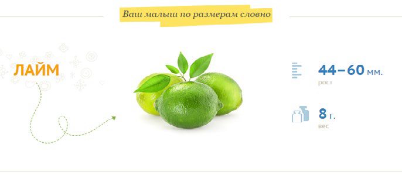

11 неделя беременности

Начинает работать кишечник. Появляются зачатки ногтей. Начинается выработка мочи. Появляются первые рефлексы.
В это время начинает проявляться отчетливость и целенаправленность движений плода: в случае касания им стенки матки, он пытается от нее оттолкнуться. Размер плода на одиннадцатой неделе начинает активно увеличиваться, соответственно и живот начнет расти.
Голова крохи еще слишком велика и занимает половину всего крошечного тельца, поскольку идет активное развитие головного мозга.
В то же время, внутри организма малыша идет развитие внутренних органов, начинает работать кишечник. Понятно, что пока ему нечего перевари-вать, но со временем именно через него будет происходить выброс ненужных клеток и околоплодных вод. В конце 11 недели уже начинают проявляться первичные половые признаки.
Грудная клетка практически сформирована, также продолжается развитие пальчиков и стоп. Появляются зачатки ноготочков.
Глаза крохи еще слишком широко расставлены, а уши располагаются на непривычно низком уровне.
Ноги не велики по сравнению со всем телом. Постепенно, благодаря работе почек, начинается выработка мочи, которая пополняет объемы около-плодных вод. В это время у малыша появляются первые рефлексы – сосательный и глотательный, а также развивается обоняние.
На 11 неделе:
- Малыш может поднять головку;
- У него появилась хватательная реакция;
- Развивается пищеварительный тракт ребёнка;
- Начинают формироваться половые органы;
- Малыш уже умеет реагировать на внешние раздражители;
- Движения ребёнка становятся более отчётливыми.
ВАШ ОРГАНИЗМ
11 неделя беременности – первый триместр подходит к концу, токсикоз «отступает», а будущая мама уже начинает чувствовать растущую матку. Внешние изменения пока ещё малозаметны, а вот внутренне практически каждая женщина адаптировалась к новому состоянию. Страхи первых тревожных недель беременности позади, будущая мама чувствует, что стала эмоционально устойчивее.
С началом этого периода у женщины начинается процесс активного сжигания калорий, поскольку усиливается обмен веществ. Также увеличивается объем циркулирующей крови.
Появляется жажда, обильное потоотделение, испытывается внутренний жар. Изменчивое настроение, необъяснимая тревожность, раздражительность, плаксивость – теперь постоянные спутники беременной женщины, помочь усмирить которые может только терпеливый и заботливый супруг.
Размеры матки уже достаточно велики, теперь она занимает всю область таза, благодаря чему вы можете самостоятельно ее прощупать.
Гормональные изменения, происходящие в женском организме, могут привести к изменению состояния волос и ногтей.
У некоторых беременных женщин наблюдается их быстрый рост и самопроизвольное укрепление, а у других наоборот – волосы и ногти становятся слабыми, ломкими и безжизненными.
Но как бы то ни было, в скором времени (после рождения ребенка) все это прекратится.
ЗДОРОВЫЕ СОВЕТЫ
Кроме повреждений волос и ногтей вам, в случае неправильного питания, может угрожать разрушение зубов, особенно если они не были залечены до беременности. Помимо специальных препаратов, богатых фтором и кальцием, мамочкам следует придерживаться правильного сбалансированного питания, при котором основной упор делается на молочные продукты.
При нормальном течение беременности к этому сроку пропадает слабость и разбитость. Если же в состоянии продолжает преобладать усталость – это могут быть первые признаки низкого гемоглобина. Поэтому следует провести анализ крови, и проверить уровень железа в крови. Если наблюдается его нехватка, нужно включить в свой рацион железосодержащие продукты (печень, гранаты и др.).
Если по ночам вам душно, держите на прикроватной тумбочке небольшой вентилятор, это поможет вам лучше спать.
СКРИНИНГ И ДРУГИЕ ОБСЛЕДОВАНИЯ
На этом сроке вас могут направить на прохождение скрининга. Скрининг представляет собой троекратное УЗИ и анализ крови на биохимию. Это обязательный анализ, способный выявить отклонения в развитии плода, а точнее – риск их развития. Сама процедура не вызывает опасений и не влияет на развитие малыша и здоровье матери.
Если в процессе обследования врачом установлены некие тревожные факторы, будущую маму направят к генетику на консультацию. Но данные скрининга – отнюдь не приговор, а лишь повод для более детальных обследований.
Первый скрининг проводится на 11–12 неделе, это же самое оптимальное время для установки точного срока беременности. Цель УЗИ на 11 неделе беременности – оценка течения беременности, выявление многоплодной беременности, измерение воротникового пространства плода.
На УЗИ вы сможете увидеть своего малыша, послушать его сердцебиение.
Для определения пола ребенка срок еще слишком мал, узист может только предположительно сказать вам мальчика или девочку вы ждете.
Если вы беременны двойней и еще не знаете об этом, это ультразвуковое исследование может преподнести вам сюрприз.
Если у вас будут двойняшки, вам необходимо забыть на время все привычные представления о лишних килограммах. Двойной уровень гормонов и два плода подразумевают повышенный объем околоплодной жидкости и крови.
В итоге вы скорее всего наберете больший вес в первом триместре и ваша беременность станет видна раньше, чем у беременных одним ребенком. В среднем вы можете ожидать, что наберете 2-5 кг во время первого триместра. Заботьтесь о растущей жизни внутри вас, а не о цифрах на ваших весах.
10 неделя 12 неделя